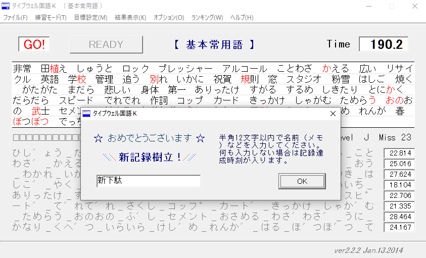
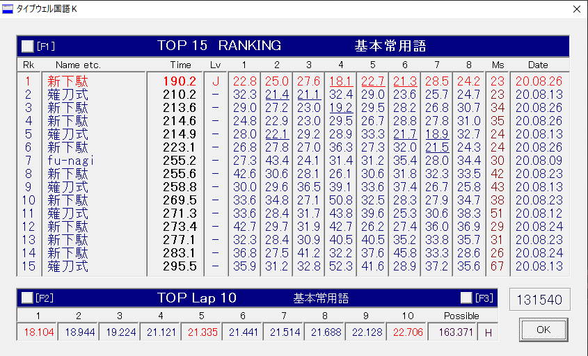

思ったより随分早く薙刀式配列のときの自己新記録をこえて、念願の"J"になった。
薙刀式のときもそうだったけど、これくらいのスピードになるとようやく実用的に使えるレベルになって、今これも新下駄配列で書いているけどそれほど苦じゃない。
ただ、このレベルになってもまだまだ出現頻度の低いかながササッと打てないのが、やっぱり新下駄配列の難しい部分だなぁと思うけれど、まだまだ速度に伸びしろを感じるのは親指シフトのときは全然なかった感覚なので、さすが中指シフトだなと思う。（そもそも大半のかなは、同時押しなしの単打で打てているので、それに驚くほど。）
なにより"J"程度の速度でも、のんびり気ままに思索を書き綴るには、かえって丁度良い速度だなと感じるくらい。薙刀式のときと同じように、指の負荷も全くなく、日本語の音韻と打鍵が一致しているので楽しく、自分の思考をのびのびとそのまま形にできることが本当に嬉しい。
これこそホントに親指シフトでいうところの「指がしゃべる」感覚に近い気がしていて、今まで親指シフトでも薙刀式でもJISかな入力でも、かつフリック入力でさえ、イマイチその感覚はよくわからなかったのだけど、新下駄ではそれがよく理解できる気がする。指がしゃべるというのは、ひょっとすると肌感覚と合っていないと体感できない感覚なんだろうか。
Vimを習得したときもそうだったけど、どんなツールであっても、自分の肌感覚にあったものが手に入ったと感じる瞬間は感動もひとしおで、ホントいまその感覚がある。（ひょっとしたら、かな入力だけでなくて、ローマ字入力も早めにEucalynとかに移行したら良いのかもしれない。検討してみよう。）
ちなみに、薙刀式も肌感覚と近そうで気に入っていたのだけど、（以前書いたことの繰り返しにはなってしまうけど）、なかなかエミュレータや親指シフトが肌にあわず、とても残念だった。
その点で新下駄配列を始めとする中指シフト系配列はとても良くて、最初の学習時こそ頭が大混乱してまともに何も打てない期間があるのは辛かったものの、その期間を乗り越えれば超快適。もっと高速打鍵するようになってくればロールオーバーの問題とか出てくるのかもしんないけど、今のところはやまぶきRで同時押し判定50msでとても快適に打ててる。
あと打鍵が快適になったのは、ダブルキーボードを本格的に徹底するようになって、肩こりが激減したのも大きい。（今はHHKB Pro2 + RealForce。ホントは左右揃えるのがベターだとは思うけど、一応静電容量方式で揃ってはいるので快適。）
（……関係ないけど、「肌感覚」って言葉って少しHな響き(笑)。指の感覚ってあんまり肌感覚って言わない気がするけど、他に合う言葉が見つからなかったんだよなぁ。あえて類語探すなら体感とか触感かなあ。うーん。）
新下駄配列は、もう少し練習して、ある程度の高速打鍵ができるようになってきたら、覚えるコツとか上達のコツとかをブログに書いていこうかな。あと、YouTubeに新配列系の打鍵動画が少ないのも自分自身コミットして解決していきたいので、もうちょい人に見せれるくらいの速度に早くなりたい。